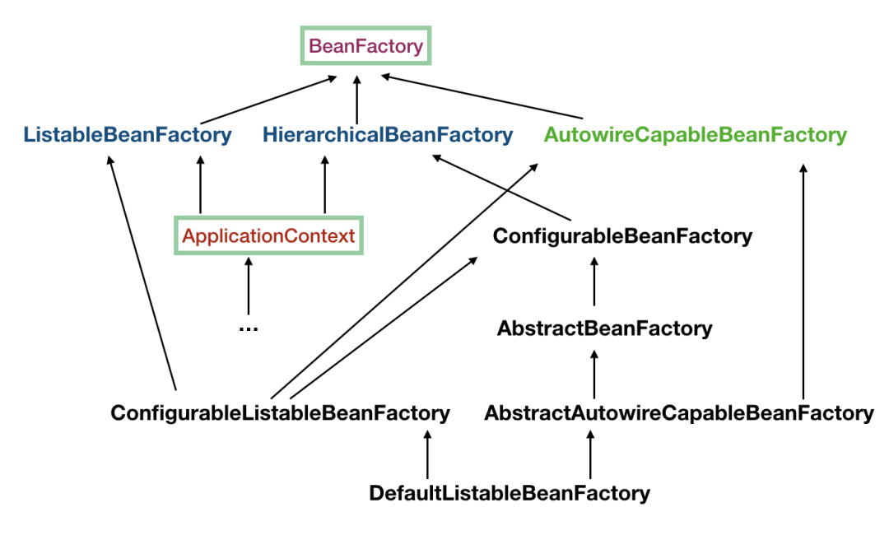
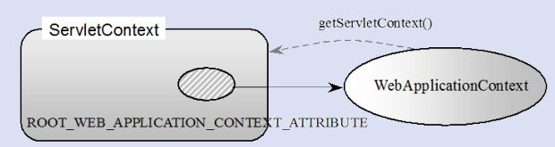
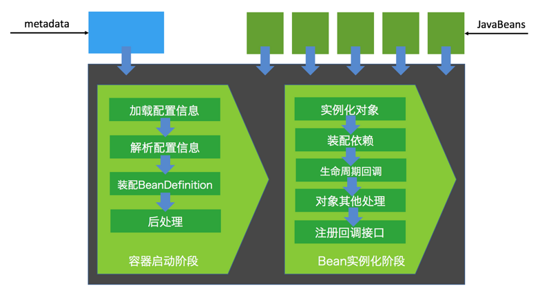
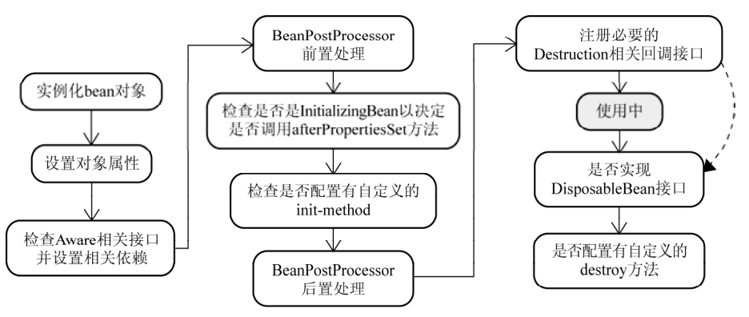
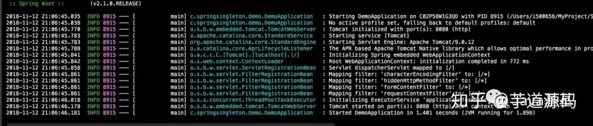

Spring IOC #
如无特殊说明，本文使用的 Spring 版本为 5.3.9。
1 背景 #
- 传统的 Java 组件协作方式如下：
-
假如我们有一个在线书店的项目，通过
BookService获取书籍：public class BookService { private HikariConfig config = new HikariConfig(); private DataSource dataSource = new HikariDataSource(config); public Book getBook(long bookId) { try (Connection conn = dataSource.getConnection()) { ... return book; } } }为了从数据库查询书籍，
BookService持有一个DataSource，为了实例化一个HikariDataSource，又不得不实例化一个HikariConfig。 -
现在我们继续编写
UserService获取用户：public class UserService { private HikariConfig config = new HikariConfig(); private DataSource dataSource = new HikariDataSource(config); public User getUser(long userId) { try (Connection conn = dataSource.getConnection()) { ... return user; } } }因为
UserService也需要访问数据库，因此，我们不得不也实例化一个HikariDataSource。 -
在处理用户购买的
CartServlet中，我们需要实例化UserService和BookService：public class CartServlet extends HttpServlet { private BookService bookService = new BookService(); private UserService userService = new UserService(); protected void doGet(HttpServletRequest req, HttpServletResponse resp) throws ServletException, IOException { long currentUserId = getFromCookie(req); User currentUser = userService.getUser(currentUserId); Book book = bookService.getBook(req.getParameter("bookId")); cartService.addToCart(currentUser, book); ... } } -
类似的，在购买历史
HistoryServlet中，也需要实例化UserService和BookService：public class HistoryServlet extends HttpServlet { private BookService bookService = new BookService(); private UserService userService = new UserService(); } -
上述每个组件都采用了一种简单的通过
new创建实例并持有的方式，这种方式具有如下缺点：- 实例化一个组件其实很难，例如，
BookService和UserService要创建HikariDataSource，实际上需要读取配置，才能先实例化HikariConfig，再实例化HikariDataSource。 - 没有必要让
BookService和UserService分别创建DataSource实例，完全可以共享一个DataSource，但谁负责创建DataSource，谁负责获取其他组件已经创建的DataSource，不好处理。 - 很多组件需要销毁以便释放资源，例如
DataSource，但如果该组件被多个组件共享，如何确保他的使用方都已经全部被销毁。 - 随着更多的组件被引入，例如，书籍评论，需要共享的组件写起来会更困难，这些组件的依赖关系会越来越复杂。
- 测试某个组件，例如
BookService，是复杂的，因为必须要在真实的数据库环境下执行。
- 实例化一个组件其实很难，例如，
-
从上面的例子可以看出，如果一个系统有大量的组件，其生命周期和相互之间的依赖关系如果由组件自身来维护，不仅大大增加了系统的复杂性，而且会导致组件之间极为紧密的耦合，继而给测试和维护带来了极大地困难。
-
因此，核心问题是：
- 谁负责创建组件。
- 谁负责根据依赖关系组装组件。
- 销毁时，如何按依赖顺序正确销毁。
解决这一问题的核心方案就是IOC。
-
例如，
BookService自己并不会创建DataSource，而是等待外部通过setDataSource()方法来注入一个DataSource：public class BookService { private DataSource dataSource; public void setDataSource(DataSource dataSource) { this.dataSource = dataSource; } } -
因为IoC 容器要负责实例化所有的组件，因此，有必要告诉容器如何创建组件，以及各组件之间的依赖关系，一种最简单的配置是通过 XML 文件来实现：
<beans> <bean id="dataSource" class="HikariDataSource" /> <bean id="bookService" class="BookService"> <property name="dataSource" ref="dataSource" /> </bean> <bean id="userService" class="UserService"> <property name="dataSource" ref="dataSource" /> </bean> </beans>上述 XML 配置文件指示 IoC 容器创建 3 个 JavaBean 组件，并把
id为dataSource的组件通过属性dataSource（即通过调用setDataSource()方法）注入到另外两个容器中。在 Spring 的 IoC 容器中，我们把所有组件统称为 JavaBean，即配置一个组件就是配置一个 Bean。
-
从上面的代码中我们可以看到，依赖注入可以通过
set()方法实现，但依赖注入也可以通过构造方法实现：public class BookService { private DataSource dataSource; public BookService(DataSource dataSource) { this.dataSource = dataSource; } }Spring 的 IoC 容器同时支持属性注入和构造方法注入，并允许混合使用。
-
2 含义 #
- IoC，全称是 Inverse of Control，即控制反转，就是把原先我们代码里面需要实现的对象创建、依赖的代码，反转给容器来帮忙实现，所有组件不再由应用程序自己创建和配置，而是由 IOC 容器负责，这样应用程序只需要直接使用已经创建并配置好的组件。
- 因此，IoC解决了一个最主要的问题，将组件的创建和配置与组件的使用相分离，由 IoC 容器负责管理组件的生命周期。
3 容器实现 #
Spring 中的容器可以分为两大类
- 一类是由 BeanFactory 接口定义的核心容器：
- BeanFactory位于整个容器类体系结构的顶端，其基本实现类为 DefaultListableBeanFactory。
- 之所以称其为核心容器，是因为该类容器实现了 IoC 的核心功能，比如配置文件的加载解析、Bean 依赖的注入以及生命周期的管理等。
- BeanFactory 作为Spring 框架的基础设施，面向 Spring 框架本身，一般不会被用户直接使用。
- 另一类是由 ApplicationContext 接口定义的容器：
- 通常译为应用上下文，不过称其为应用容器可能更形象些。
- 他在 BeanFactory 提供的核心 IoC 功能之上做了扩展：
- 通常 ApplicationContext 的实现类内部都持有一个 BeanFactory 的实例，IoC 的核心功能会交由他去完成。
- 而 ApplicationContext 本身，则专注于在应用层对 BeanFactory 做扩展，比如提供对国际化的支持、支持框架级的事件监听机制以及增加了很多对应用环境的适配。
- ApplicationContext面向的是使用 Spring 框架的开发者，例如开发中经常使用的 ClassPathXmlApplicationContext 就是典型的 Spring 的应用容器。
3.1 BeanFactory #
- BeanFactory，即生产 Bean 的工厂，他负责生产和管理各个 Bean 实例。
- BeanFactory 的继承体系如下图所示：

先介绍一下里面比较重要的一些接口和类：
- ApplicationContext 继承了 ListableBeanFactory，这个 Listable 的意思就是通过这个接口，我们可以获取多个 Bean，但是通过源码我们可以发现，最顶层 BeanFactory 接口的方法都是获取单个 Bean 的。
- ApplicationContext 继承了 HierarchicalBeanFactory，Hierarchical 的意思为分层，也就是说我们可以在应用中起多个 BeanFactory，然后将各个 BeanFactory 设置为父子关系。
- AutowireCapableBeanFactory 主要用来自动装配 Bean，ApplicationContext 虽然没有继承他，但是ApplicationContext 接口定义的最后一个方法
getAutowireCapableBeanFactory()来获取 AutowireCapableBeanFactory。 - ConfigurableListableBeanFactory 也是一个特殊的接口，特殊之处在于他继承了第二层所有的三个接口，而ApplicationContext 没有，主要用于 IoC 容器的定制性。
3.2 ApplicationContext #
- ApplicationContext 的继承体系如下图所示：
 我们重点了解一下比较重要的实现类：
我们重点了解一下比较重要的实现类：
- ClassPathXmlApplicationContext：
- 主要用于在 ClassPath 中寻找 XML 配置文件，根据 XML 文件内容来构建 ApplicationContext 容器。
- FileSystemXmlApplicationContext：
- 其构造函数需要一个 XML 配置文件在系统中的路径，其他和 ClassPathXmlApplicationContext 基本一样。
- AnnotationConfigApplicationContext：
- 基于注解来使用，不需要配置文件，采用 Java 配置类和各种注解来配置，是比较简单的方式，也是大势所趋。
- ConfigurableApplicationContext：
- 扩展于 ApplicationContext，新增加了两个主要的方法，分别为
refresh()和close()，让 ApplicationContext 具有启动、刷新和关闭应用上下文的能力：- 在应用上下文关闭的情况下调用
refresh()即可启动应用上下文。 - 在已经启动的状态下，调用
refresh()则清除缓存并重新装载配置信息。 - 调用
close()则关闭应用上下文。
- 在应用上下文关闭的情况下调用
- 扩展于 ApplicationContext，新增加了两个主要的方法，分别为
- ClassPathXmlApplicationContext：
- 此外，ApplicationContext 还通过其他接口扩展了 BeanFactory 的功能：

-
ApplicationEventPublisher：
- 让容器拥有发布应用上下文事件的功能，包括容器启动事件、关闭事件等。
- 实现了 ApplicationListener 事件监听接口的 Bean，可以接收容器事件，并对事件进行相应处理。
- 在 ApplicationContext 抽象实现类 AbstractApplicationContext 中，我们可以发现存在一个 ApplicationEventMulticaster，他负责保存所有监听器，以便在容器产生上下文事件时通知这些事件监听者。
-
MessageSource：
-
为应用提供
i18n国际化消息访问的功能。什么是
i18n？- 在开发应用程序的时候，经常会遇到支持多语言的需求，这种支持多语言的功能称之为国际化，英文是
Internationalization，缩写为i18n（因为首字母i和末字母n中间有 18 个字母）。 - 还有针对特定地区的本地化功能，英文是
Localization，缩写为l10n，本地化是指根据地区调整类似姓名、日期的显示等。 - 也有把上面两者合称为全球化，英文是
Globalization，缩写为g11n。
- 在开发应用程序的时候，经常会遇到支持多语言的需求，这种支持多语言的功能称之为国际化，英文是
-
-
ResourcePatternResolver：
- ApplicationContext 实现类都实现了类似于 PathMatchingResourcePatternResolver 的功能，可以通过带前缀的 Ant 风格的资源文件路径装载 Spring 的配置文件。
-
3.3 WebApplicationContext #
-
在 ApplicationContext 下面还有一个实现类是WebApplicationContext，是专门为 Web 应用准备的容器，他允许从相对于 Web 根目录的路径中装载配置文件完成初始化工作。
-
从 WebApplicationContext 中可以获得 ServletContext 的引用，整个 Web 应用上下文对象将作为属性放置到 ServletContext 中，以便 Web 应用环境可以访问 Spring 应用上下文。
-
WebApplicationContext 定义了一个常量
ROOT_WEB_APPLICATION_CONTEXT_ATTRIBUTE，在上下文启动时，WebApplicationContext 实例即以此为键放置在 ServletContext 的属性列表中，因此我们可以直接通过下面语句从 Web 容器中获取 WebApplicationContext：WebApplicationContext wac = (WebApplicationContext)servletContext.getAttribute(WebApplicationContext.ROOT_WEB_APPLICATION_CONTEXT_ATTRIBUTE);
4 启动流程 #
-
Spring IoC 的启动时会进行以下步骤：
- 首先读取应用程序提供的 Bean 的配置信息，并在 Spring 容器中生成一份相应的 Bean 配置注册表。
- 然后根据注册表加载、实例化 Bean、建立 Bean 与 Bean 之间的依赖关系。
- 最后将这些准备就绪的 Bean 放到 Bean 缓冲池中，等待应用程序调用。

-
总结一下，我们可以把 IoC 的启动流程分为以下两个重要的阶段：
-
容器的启动阶段。
-
Bean 的实例化阶段。 
需要注意的是：
- 在 Spring 中，最基础的容器接口方法是由 BeanFactory 定义的，而BeanFactory 的实现采用的是延迟加载，也就是说，容器启动时，只会进行第一个阶段的操作，当需要用到某个实例时，才会进行第二个阶段的操作。
- ApplicationContext（另一个容器的实现类）在启动容器时就完成了所有初始化，这就需要更多的资源。
- 因此，我们需要根据不同的场景选择不同的容器实现类，下面介绍更多的是以 ApplicationContext 为主。
-
4.1 容器的启动阶段 #
在容器启动阶段，我们的 Spring 经历了很多事情，具体的话可以分为以下几个步骤：
- 加载配置信息。
- 解析配置信息。
- 装配 BeanDefinition。
- 后处理。
4.1.1 加载配置信息 #
- 加载配置信息主要分为两种，分别为：
- 类路径加载：ClassPathXmlApplicationContext。
- 文件系统加载：FileSystemXmlApplicationContext
- IoC 容器读取配置文件的接口为
BeanDefinitionReader，他会根据配置文件格式的不同给出不同的实现类，将配置文件中的内容读取并映射到 BeanDefinition，比如XML 文件就会用 XmlBeanDefinitionReader。
4.1.2 解析配置信息 #
- 解析配置信息就是将我们读取到的配置信息转换成一个 DOM 树，然后解析里面的配置信息装配到我们的 BeanDefinition。
- 我们在
processBeanDefinition()中先将解析后的信息封装到一个 BeanDefinitionHolder，包含一个 BeanDefinition 的实例和他的beanName、alias（别名）这三个信息。
4.1.3 装配 BeanDefinition #
- 在上面我们将信息解析后，就会装配到一个 BeanDefinitionHolder，里面就包含了我们的 BeanDefinition。
- 然后装配 BeanDefinition，就是将这些 BeanDefinition 注册到 BeanDefinitionRegistry（核心是一个
beanName到beanDefinition的Map）中，我们在获取 BeanDefinition 的时候，需要通过beanName获取别名，然后通过别名再一次重定向获取我们的 BeanDefinition。 - Spring 的后续操作直接从 BeanDefinitionRegistry 中读取配置信息，具体的注册实现就是在我们上面介绍到的 DefaultListableBeanFactory 实现类里。
4.1.4 后处理 #
-
在我们的后续操作中，容器扫描 BeanDefinitionRegistry 中的 BeanDefinition，然后使用 Java 的 反射机制自动识别出 Bean 工厂后处理器（实现 BeanFactoryPostProcessor 接口）的 Bean，然后调用这些 Bean 工厂后处理器对 BeanDefinitionRegistry 中的 BeanDefinition 进行加工处理，主要完成以下两个工作：
- 对使用到占位符的元素标签进行解析，得到最终的配置值，这意味着对一些半成品式的 BeanDefinition 对象进行加工处理并得到成品的 BeanDefinition 对象。
- 对 BeanDefinitionRegistry 中的 BeanDefinition 进行扫描，通过 Java 反射机制找出所有属性编辑器的 Bean（实现
java.beans.PropertyEditor接口的 Bean），并自动将他们注册到 Spring 容器的属性编辑器注册表中（PropertyEditorRegistry）。
-
Spring 容器从 BeanDefinitionRegistry 中取出加工后的 BeanDefinition，并调用 InstantiationStrategy 着手进行 Bean 实例化的工作，在实例化 Bean 时，Spring 容器使用 BeanWrapper 对 Bean 进行封装，BeanWrapper 提供了很多以 Java 反射机制操作 Bean 的方法，他将结合该 Bean 的 BeanDefinition 以及容器中属性编辑器，完成 Bean 属性的设置工作。
-
在装配好 Bean 容器后，还要通过方法
prepareBeanFactory()准备 Bean 容器，在准备阶段会注册一些特殊的 Bean，这里不做深究，在准备容器后，我们可能会对 Bean 进行一些加工，就需要用到 BeanPostProcessor 来进行一些后处理，我们利用容器中注册的 Bean 后处理器（实现 BeanPostProcessor 接口的 Bean）对已经完成属性设置工作的 Bean 进行后续加工，直接装配出一个准备就绪的 Bean。BeanPostProcessor和BeanFactoryPostProcessor有什么区别？BeanPostProcessor：- 对容器中的 Bean 进行后处理，对 Bean 进行额外的加强、加工。
- 是在我们单例 Bean 实例化过程中穿插执行的。
BeanFactoryPostProcessor：- 对 Spring 容器本身进行后处理，增强容器的功能。
- 是在我们单例 Bean 实例化之前执行的。
4.2 Bean 的实例化阶段（Bean 的生命周期） #
- 在
ApplicationContext中，所有的BeanDefinition的scope默认是singleton，针对singleton我们 Spring 容器采用的是预先实例化的策略，这样在我们获取实例的时候，就会直接从缓存里面拉取出来，提升了运行效率。 - 但是如果我们是懒加载的话，那么就不预先实例化，而是在我们第一次
getBean的时候才会去实例化，不过我们大部分时候都不会去用懒加载，除非这个 Bean 比较特殊，例如非常耗费资源，在应用程序的生命周期里的使用概率比较小，在这汇总情况下我们可以将他设置为懒加载。
4.2.1 实例化过程 #

Spring 中 Bean 的实例化一般可以分为以下几个阶段：
- 实例化 Bean 对象：
- Spring 对 Bean 进行实例化，默认 Bean 是单例。
- 设置对象属性：
- Spring 对 Bean 进行依赖注入，比如有没有配置当前
depends-on的依赖，有的话就去实例化依赖的 Bean。
- Spring 对 Bean 进行依赖注入，比如有没有配置当前
- 检查 Aware 相关接口并设置相关依赖：
- 如果 Bean 实现了BeanNameAware 接口，Spring将 Bean 的
id传给setBeanName()方法。 - 如果 Bean 实现了BeanFactoryAware 接口，Spring 将调用他的
setBeanFactory()方法，将 BeanFactory 实例传进来。 - 如果 Bean 实现了ApplicationContextAware 接口，Spring 将调用他的
setApplicationContext()方法，将应用上下文的引用传入到 Bean 中。
- 如果 Bean 实现了BeanNameAware 接口，Spring将 Bean 的
- BeanPostProcessor 前置处理：
- 如果 Bean 实现了BeanPostProcessor 接口，Spring 将调用他的
postProcessBeforeInitialization()方法。
- 如果 Bean 实现了BeanPostProcessor 接口，Spring 将调用他的
- 注册必要的 Initialization 相关回调接口：
- 如果 Bean 实现了InitializingBean 接口，Spring 将调用他的
afterPropertiesSet()方法。 - 如果 Bean使用
init-method属性声明了初始化方法，Spring 将调用他的afterPropertiesSet()方法。
- 如果 Bean 实现了InitializingBean 接口，Spring 将调用他的
- BeanPostProcessor 后置处理：
- 如果 Bean 实现了BeanPostProcessor 接口，Spring 将调用他的
postProcessAfterInitialization()方法。
- 如果 Bean 实现了BeanPostProcessor 接口，Spring 将调用他的
- 注册必要的 Destruction 相关回调接口：
- 如果 Bean 实现了DisposableBean 接口，Spring 将调用他的
distroy()接口方法。 - 如果 Bean使用了
destriy-method属性声明了销毁方法，Spring 将调用他的distroy()接口方法。
- 如果 Bean 实现了DisposableBean 接口，Spring 将调用他的
- 此时 Bean 已经准备就绪，可以被应用程序使用了，他们将一直驻留在应用程序上下文中，直到该应用上下文被销毁。
4.2.2 循环依赖问题 #
-
循环依赖问题是 Bean 在实例化过程中一个比较复杂的问题，例如我们有 A、B 两个类，A 的构造方法有一个参数是 B，B 的构造方法有一个参数是 A，这种 A 依赖于 B，B 依赖于 A 的问题就是循环依赖问题：
@Service public class A { public A(B b) { } } @Service public class B { public B(A a) { } } -
循环依赖可以分为三种：
-
单例构造器循环依赖，例如：
@Service public class A { public A(B b) { } } @Service public class B { public B(C c) { } } @Service public class C { public C(A a) { } }结果，项目启动失败，报了一个
cycle：
-
原型循环依赖，例如
@Service @Scope("prototype") public class A1 { @Autowired private B1 b1; } @Service @Scope("prototype") public class B1 { @Autowired public C1 c1; } @Service @Scope("prototype") public class C1 { @Autowired public A1 a1; }结果，项目启动失败，报了一个
cycle：
-
单例
setter注入循环依赖，例如：@Service @Scope("singleton") // 默认就是单例方式 public class A1 { @Autowired private B1 b1; } @Service public class B1 { @Autowired public C1 c1; } @Service public class C1 { @Autowired public A1 a1; }结果，项目启动成功：

-
4.2.3 循环依赖解决 #
4.2.3.1 单例构造器循环依赖 #
- 假如 A 依赖于 B、B 依赖于 A，在我们实例化 A 的时候就要去实例化 B，然后 B 又要去实例化 A，在这个过程中，我们会将
beanName添加到一个 Set 结构中，当第二次添加 A 的时候，因为Set 已经存在 A 的beanName了，所以Spring 就会判断发生了循环依赖问题，抛出异常。 - Spring 无法解决单例构造器循环依赖问题，只能抛出异常。
4.2.3.2 原型循环依赖 #
- 原型循环依赖的判断条件和构造器的差不多，最主要的区别就是 Set 的类型变成了 ThreadLocl 类型。
- Spring 无法解决原型循环依赖问题，只能抛出异常。
4.2.3.3 单例 setter 注入循环依赖 #
- Spring通过三级缓存来解决单例
setter注入循环依赖问题。 - 三级缓存是指分别有三个缓存：
- 一级缓存：
singletonObjects。 - 二级缓存：
earlySingletonObjects。 - 三级缓存：
singletonFactories。
- 一级缓存：
- 我们以上面 A 依赖于 B，B 依赖于 A 的样例来分析一下
setter是如何通过三级缓存来解决循环依赖问题：- 首先我们在实例化 A 的时候，通过 BeanDifinition 定义拿到 A 的无参构造方法，通过
反射创建了这个实例对象，这个 A 的实例对象是一个尚未进行依赖注入和
init-method方法调用等等逻辑处理的早期实例，是我们业务无法使用的，然后在进行后续的包装处理前，我们会将他封装成一个ObjectFactory对象然后存入到我们的三级缓存中（key是beanName，value是ObjectFactory对象），相当于一个早期工厂提前曝光。 - 然后呢我们会继续实例化 A，在实例化过程中发现 A 依赖于 B，我们通过 Setter 依赖注入的时候，通过
getBean(B)去获取依赖对象 B，但是这个B 还没有实例化，所以我们就需要去创建 B 的实例。 - 然后我们就开始创建 B 的实例，同上面创建实例 A 的过程，在实例化 B 的过程中，因为B 依赖于 A，所以也会调用
getBean(A)去获得 A 的实例，首先会去一级缓存访问，如果没有就去二级缓存，再没有就去三级缓存，然后在三级缓存中发现我们的早期实例 A，就直接拿来用了，然后完成 B 的依赖，再完成后面 B 实例化过程的一系列阶段，最后将实例化完成的 B 存放到一级缓存中，并将二三级缓存清理掉。 - 完成 B 的实例化后，我们就会回到 A 的实例化阶段，我们的A 在有了 B 的依赖后，也继续完成了后续的实例化过程，把一个早期的对象变成一个完整的对象，并将 A 存进到一级缓存中，清除二三级缓存。
为什么要有三级缓存，二级缓存不够用吗？
- 我们在上面分析的过程中，可能会感觉二级缓存的存在感不是特别强，为什么不去掉第二级的缓存然后变成一个二级缓存呢。
- 这是因为我们的B 在拿到 A 的早期实例后就会进行缓存升级，将 A 从三级缓存移到二级缓存中，之所以需要三级缓存，是因为在这一步我们的Bean 可能还需要一些其他的操作，比如被 Bean 后置处理器进行一些增强，或者做一些 AOP 的判断，如果只有二级缓存的话，那么返回的就是早期实例而不是我们增强后的实例。
- 首先我们在实例化 A 的时候，通过 BeanDifinition 定义拿到 A 的无参构造方法，通过
反射创建了这个实例对象，这个 A 的实例对象是一个尚未进行依赖注入和